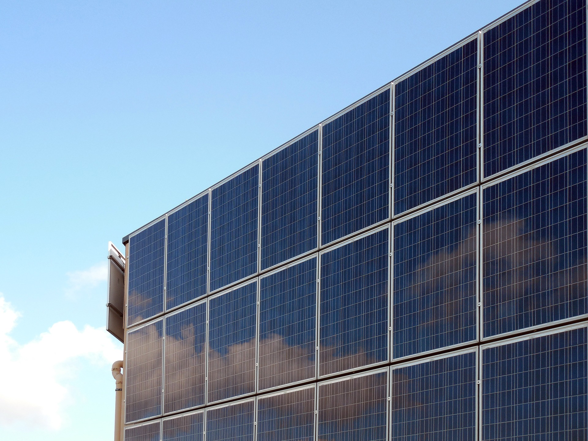
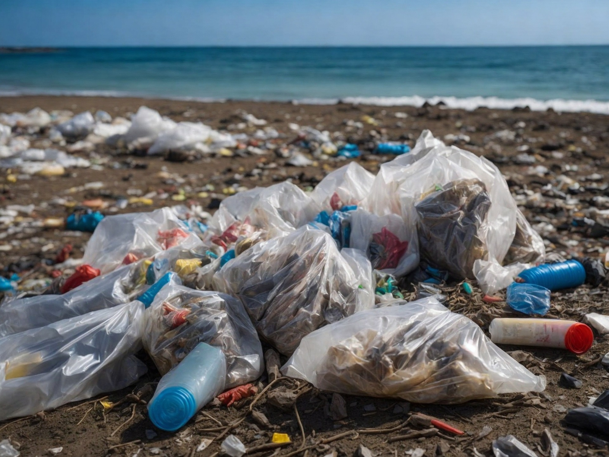
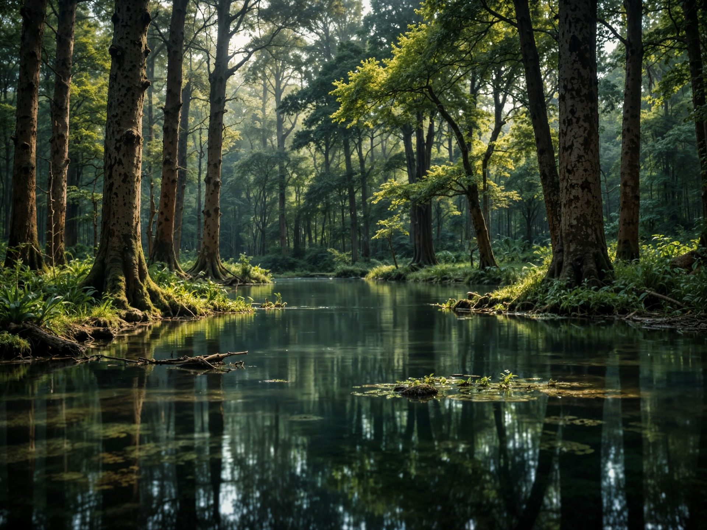

私たちの地球を未来へつなぐために、できることから始めませんか？

再生可能エネルギー
「再生可能エネルギー」は、私たちの未来を形作る重要な鍵です。地球温暖化やエネルギー資源の枯渇が深刻化する中で、持続可能なエネルギーの在り方を学ぶことは、私たち一人ひとりにとって欠かせない課題となっています。
- エネルギーがもたらす影響
- 日々の生活に必要不可欠なエネルギーが、環境や社会にどのような影響を与えているかを知ることで、責任ある選択ができるようになります。
- 未来のための選択肢
- 太陽光、風力、水力など、再生可能エネルギーの可能性を学ぶことで、持続可能な社会に向けた解決策を考えるきっかけとなります。
- 日常生活での活用方法
- 個人でも実践できるエコ活動や、省エネの工夫を知ることで、身近なところから変化を起こす力を得られます。
ゴミ削減のアイデア
「ゴミ削減」は、地球環境を守るために私たちができる最も身近な取り組みです。プラスチック汚染や埋め立て地の限界など、深刻化するゴミ問題を解決するには、私たち一人ひとりがゴミについて正しく学び、行動を起こすことが必要です。
- ゴミが与える環境への影響
- 捨てた後のゴミがどのように処理され、どのような環境問題を引き起こしているのかを知ることで、自分の行動が地球に与える影響を実感できます。
- 持続可能な生活への道筋
- リデュース（減らす）、リユース（再利用する）、リサイクル（資源に戻す）の3Rを中心に、日常生活で無理なく取り組める方法を学ぶことで、ゴミを減らす習慣を身につけられます。
- ゴミ削減がもたらす社会的効果
- ゴミを減らすことで、資源の浪費を防ぐだけでなく、廃棄物処理にかかるコストやエネルギーも削減できます。地域社会全体の環境負荷を軽減する大きな力となります。


自然保護活動
「自然保護活動」は、私たちが自然の恵みを未来へ引き継ぐために欠かせない取り組みです。森林の減少や生物多様性の危機が進む中で、自然を守るための知識を深め、行動を起こすことが私たちに求められています。
- 自然の役割と価値の理解
- 森林や海、湿地などの自然が、地球環境や私たちの生活にどれだけ重要な役割を果たしているのかを知ることで、自然保護の必要性を実感できます。
- 危機に直面する生態系の現状
- 生物多様性が失われる原因や、絶滅の危機に瀕している動植物について学ぶことで、問題の深刻さを具体的に理解できます。
- 個人でもできる保護活動
- 地域の清掃活動や植樹、野生動物の保護支援など、私たちが日常生活の中で取り組める活動方法を知ることができます。